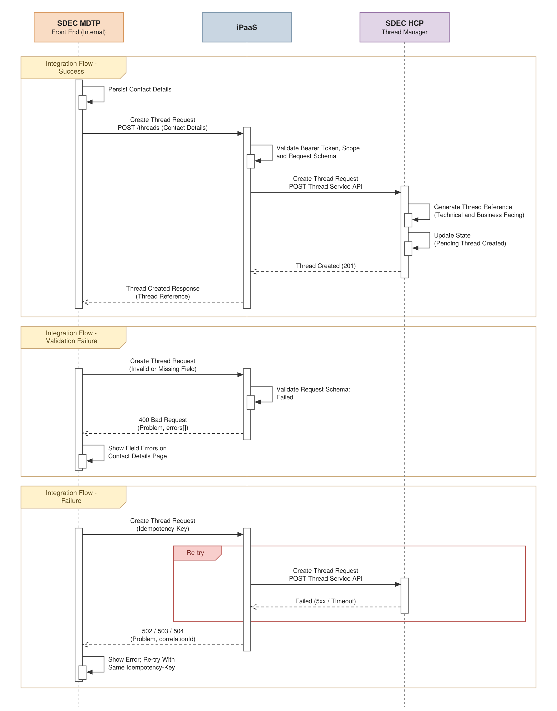
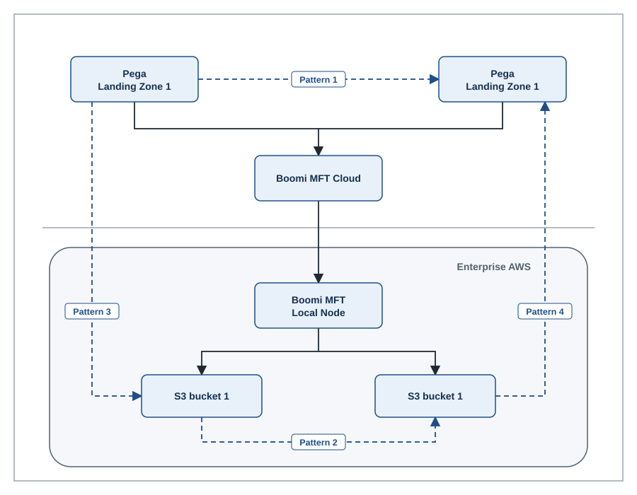

How to use this page
- Section 3.2 Assumptions: use Copy table for Word on part 1 and paste over the empty table; columns match the template (#, Assumption, Description, Owner).
- Risks: paste part 2 as a new sub-section after 3.2 (suggested 3.3 Risks). Rating is Impact / Likelihood.
- Section 4 Security Summary: keep the SbD paragraph and replace
//ToDowith part 3. - Authentication: add part 4 as 4.1 Authentication and Authorisation, with the scope table and the sequence diagram. Download the PNG to paste into Word, or the .drawio to edit (File > Export as > VSDX in diagrams.net gives a Visio file).
- Section 5.2 Integration: paste part 5 over the empty Pattern table; it uses the same two columns.
- Create Thread (Contact Details): copy the table in part 6 into section 5.2 and renumber 5.2.x. The diagram comes across with the table; if it does not, download the Create Thread PNG and insert it into the Diagram row.
- MFT patterns diagram: see part 8. Download the PNG to paste into Word, or the .drawio to edit. The downloads label the lower zone with the client AWS account name; the preview on this page uses a generic label.
- Open decisions: add D-12 to D-17 and D-22 to D-24 to the decision log. D-18 to D-21 are on the Document Checksum page.
Owners are roles. Boomi components (API layer, broker, transient storage, processes) are shown as one iPaaS throughout. Status values: Agreed (in existing IDD content), Proposed (awaiting sign-off), Open (tracked gap or decision).
1. Assumptions (section 3.2)
The following assumptions have been made
| # | Assumption | Description | Owner |
|---|---|---|---|
| A-01 | Single integration platform | Boomi iPaaS (API layer, message broker, transient file storage, integration processes) is treated as one platform. It issues and validates OAuth tokens, hosts the APIs, publishes events and performs file transfers. | Boomi Platform Owner |
| A-02 | App-to-app authentication only | SDEC authenticates its own users and owns the user session. The integration layer receives no end-user identity or user token. | SDEC Technical Lead |
| A-03 | Server-side calls only | All token and API calls are made from the SDEC backend. The browser only uses a presigned URL to upload file content. | SDEC Technical Lead |
| A-04 | NRS APIs available | NRS exposes Submission and Attachment APIs to iPaaS, issues one presigned upload URL per document, and accepts uploads from iPaaS. NRS schemas and limits are provided before build (D-11). | NRS Technical Lead |
| A-05 | eDMS delivery follows the same pattern | Documents are delivered to eDMS with the same transfer, event and webhook pattern as NRS. The eDMS interface specification is still to be provided. | eDMS Technical Lead |
| A-06 | SDEC webhook endpoint | SDEC provides an HTTPS webhook endpoint reachable from iPaaS for transfer and document events. It is secured per D-16 and processes each event ID once. | SDEC Technical Lead |
| A-07 | Document limits | Up to 10 documents per upload request and up to 20 GB per document. MIME allow-list and URL expiry are set under D-03. | Security Architect |
| A-08 | Clean files only | Only files with status AVAILABLE (AV scan passed) are transferred to NRS or eDMS. | Boomi Platform Owner |
| A-09 | Transient storage only | iPaaS is not a system of record for documents. NRS and eDMS hold the records; iPaaS purges files after delivery, on delete or by TTL (D-04). | Boomi Platform Owner |
| A-10 | Correlation | SDEC generates an X-Correlation-ID per journey and sends it on every call, so a submission can be traced end to end. | SDEC Technical Lead |
| A-11 | Environments | Matching dev, test, pre-prod and prod environments exist for SDEC, iPaaS, NRS and eDMS, each with separate client credentials. | Integration Architect |
| A-12 | Network connectivity | Firewall and allow-list changes between SDEC hosting, iPaaS, NRS and eDMS are delivered before system integration testing. | Infrastructure Lead |
| A-13 | Volumes within platform capacity | Expected submissions per day and document sizes (average and peak) fit current iPaaS capacity. SDEC to provide figures for sizing. | SDEC Product Owner |
| A-14 | Security assurance | SbD (HLSRs and SoA) and the DPIA complete before go-live. Any controls they add are absorbed without changing the integration patterns. | SbD Practitioner |
2. Risks
SDEC integration risks
| # | Risk | Description | Impact / Likelihood | Mitigation | Owner |
|---|---|---|---|---|---|
| R-01 | Large files cannot be AV scanned | The current scan limit (G-15) is far below the 20 GB maximum, so large documents may be blocked or released unscanned. | High / High | Agree a large-file scanning approach or lower the maximum size before build; never release unscanned files. | Boomi Platform Owner |
| R-02 | NRS URL expires mid-transfer | Transfer of a large file outlasts the NRS presigned URL expiry (D-09), so the upload fails. | High / Medium | Set expiry against the largest file's transfer time; on expiry, request a new URL for that document and re-try. | NRS Technical Lead |
| R-03 | Duplicate submissions | NRS may not support Idempotency-Key (D-08); a timeout followed by a re-try creates a second submission or attachment. | High / Medium | iPaaS keeps an idempotency store keyed on Idempotency-Key if NRS cannot. | Integration Architect |
| R-04 | Partial submission | Some attachments transfer and others fail, leaving an incomplete submission in NRS. | High / Medium | Track status per document; re-try only failed documents; agree with NRS how an incomplete submission is handled and closed. | NRS Technical Lead |
| R-05 | Transfer re-tries exhausted | NRS or eDMS stays unavailable beyond the re-try policy; documents wait in transient storage and the user journey stalls. | Medium / Medium | Bounded re-try with backoff (D-17), failed event and webhook to SDEC, operational alert, replay runbook, TTL longer than the re-try window. | Integration Architect |
| R-06 | Missed or duplicate webhooks | SDEC misses a callback or receives it twice, so thread state is wrong. | Medium / Medium | Event ID de-duplication, delivery re-try with dead-letter queue, reconciliation through the document status API. | SDEC Technical Lead |
| R-07 | Client secret compromise | A leaked secret lets another party call the APIs as SDEC. | High / Low | Secrets vault, rotation, least-privilege scopes, monitoring of token use; consider private_key_jwt or mTLS (D-15). | Security Architect |
| R-08 | No native PAM integration | Platform credentials cannot be sourced natively from enterprise PAM (G-14), increasing manual handling. | Medium / High | Interim controlled process with audit; track G-14 to closure. | Boomi Platform Owner |
| R-09 | Document status is a platform enhancement | Document-level status tracking is not native to Boomi MFT and must be built, putting delivery dates at risk. | Medium / Medium | Prove the status store early with a spike; agree polling, events or both (D-01). | Boomi Platform Owner |
| R-10 | Transient storage capacity | Concurrent large uploads, and two copies during supersession, exceed storage (D-06). | Medium / Medium | Size from A-13 volumes, set quotas, enforce TTL purge, monitor capacity. | Infrastructure Lead |
| R-11 | eDMS interface not defined | The eDMS leg cannot be designed or tested until its interface is known. | Medium / High | Engage eDMS early; name an owner; hold design slot for the eDMS entry. | Integration Architect |
| R-12 | Browser upload failures | Uploads of large files over poor connections fail with no resume, forcing a full re-upload. | Medium / Medium | Assess multipart or resumable upload; clear user messaging; new URL on expiry. | SDEC Technical Lead |
| R-13 | Personal data in logs | Document names and metadata may contain personal data and leak into logs. | Medium / Low | Mask names, tokens and URLs in logs; review log policy in the DPIA. | Security Architect |
| R-14 | Late security requirements | HLSRs issued late require design changes (for example mTLS or extra encryption). | Medium / Medium | Engage the SbD practitioner now; design keeps mTLS and private_key_jwt as drop-in options. | Security Architect |
| R-15 | Connectivity lead times | Firewall and network changes take longer than planned and delay integration testing. | Medium / High | Raise change requests at design sign-off; test connectivity early in each environment. | Infrastructure Lead |
3. Security Summary (section 4)
Integration position for the SbD process. Each row should be traced to an HLSR and the SoA once issued.
Security points
| # | Control area | Summary | Status |
|---|---|---|---|
| S-01 | Secure by Design status | SbD assessment for SDEC integration is in progress. HLSRs and the SoA are produced by the SbD practitioner; the points below are the integration position to feed into them and will be traced to HLSR IDs once issued. | Pending SbD |
| S-02 | Authentication | App-to-app only. Every API call uses OAuth 2.0 client credentials and a bearer token issued by iPaaS. No end-user identity or user token is passed to the integration layer. | Agreed |
| S-03 | Authorisation | One scope per operation (least privilege). iPaaS binds each client ID to a sourceSystem, so a consumer can only read, upload or delete documents it created. | Proposed |
| S-04 | Credential management | Client secrets are issued per environment, held in the enterprise secrets vault, never placed in source code, config files or logs, and rotated on a schedule with an overlap window. Sourcing platform credentials from PAM is a tracked gap (G-14). | Open (G-14) |
| S-05 | Transport security | TLS 1.2 minimum (1.3 preferred) on every leg: SDEC to iPaaS, browser to iPaaS, and iPaaS to NRS and eDMS. No plaintext endpoints. | Agreed |
| S-06 | Presigned URLs | HMAC-signed, time-bound and bound to one fileId, declared size, digest and document ID. Treated as bearer credentials: never logged in full, revoked on delete, expiry agreed under D-03 and D-09. | Proposed |
| S-07 | Browser boundary | The client secret and access token never reach the browser. The SDEC backend requests the presigned URL and passes only that URL to the browser. CORS on the upload endpoint allows SDEC origins and the PUT method only. | Proposed |
| S-08 | Integrity | SHA-256 checksum declared when the URL is requested and verified with Content-Digest on upload. A mismatch is rejected (422) and the file is not released. | Agreed |
| S-09 | Malware protection | Every file is AV scanned before it can reach AVAILABLE. Infected files are quarantined, alerted and never released to NRS or eDMS. Files above the current scan limit need a design (G-15, R-01). | Open (G-15) |
| S-10 | Data at rest and retention | Transient storage is encrypted at rest. Files are purged after delivery to NRS and eDMS, on delete, or by TTL (D-04). iPaaS holds no long-term copy of documents. | Proposed |
| S-11 | API threat protection | At the iPaaS API layer: schema validation, payload size limits, rate limiting (429 with Retry-After), JSON threat protection and Idempotency-Key replay handling. | Proposed |
| S-12 | Logging and audit | X-Correlation-ID end to end. Log metadata only: no form payload, tokens, client secrets or full presigned URLs. Document names are masked. Security events forwarded to protective monitoring (SIEM). | Proposed |
| S-13 | Error handling | All errors use the Problem structure. No stack traces, internal hostnames or platform detail are returned to consumers. | Agreed |
| S-14 | Downstream credentials | NRS and eDMS credentials are held and managed by iPaaS. SDEC has no direct network route or credentials to NRS or eDMS. | Agreed |
| S-15 | Data protection | DPIA to cover uploaded documents and submission payloads containing personal data. Metadata kept to what each API needs. | Pending DPIA |
4. Authentication: OAuth 2.0 Client Credentials
All SDEC integration patterns use OAuth 2.0 client credentials. SDEC exchanges its client ID and secret with iPaaS for a short-lived bearer token, then presents that token on every API call. iPaaS both issues and validates the token. The integration supports app-to-app authentication only.
Key points
| Topic | Guidance |
|---|---|
| Grant type | Client credentials (RFC 6749, section 4.4). Machine to machine, no user involved, no refresh token. When the token expires, SDEC requests a new one. |
| Token issuer | iPaaS issues and validates the tokens through its own token endpoint. There is no separate authorisation server in the flow. |
| Who calls | Only the SDEC backend holds the client secret and calls the token endpoint and the APIs. The browser only ever receives a presigned URL. |
| Client registration | One client per environment (dev, test, pre-prod, prod). Each client ID maps to one sourceSystem value and a fixed set of scopes. |
| Token request | POST /oauth2/token with form-encoded grant_type=client_credentials and the scopes needed. The client authenticates with HTTP Basic (client ID:client secret) over TLS. |
| Token response | access_token (signed JWT), token_type Bearer, expires_in (proposed 3600 seconds, D-13) and the granted scope. |
| Using the token | Send Authorization: Bearer <access_token> on every API call. Never put the token in a query string, URL or log line. |
| Caching | Reuse the token until shortly before expiry (for example renew when less than 60 seconds remain). Do not request a token per API call; the token endpoint is rate limited. |
| Validation in iPaaS | Signature, issuer, audience, expiry and not-before (small clock-skew allowance), scope against the operation, and client ID against sourceSystem. |
| Errors | 401 invalid_token: discard the cached token, request a new one once and re-try the call. 401 invalid_client or 403 insufficient_scope: configuration fault; log, alert and do not re-try. |
| Secret rotation | Two secrets are valid during a rotation window so SDEC can switch without downtime. Rotation period agreed with security (D-13). |
| Hardening option | private_key_jwt (RFC 7523) or mutual TLS client authentication (RFC 8705) removes the shared secret. Recommended for decision before go-live (D-15). |
Scopes per operation
| Scope | Operation | API ref | Status |
|---|---|---|---|
file-transfer.upload.request | Generate presigned URL | SDEC-MFT-API-01 | Defined (IDD-FT-002) |
file-transfer.status.read | Get document status | SDEC-MFT-API-02 | Proposed (D-02) |
file-transfer.file.delete | Delete file | SDEC-MFT-API-03 | Defined (IDD-FT-002) |
nrs.submission.create | NRS submission | SDEC-NRS-API-01 | Proposed (D-14) |
nrs.attachment.create | NRS attachment presigned URL | SDEC-NRS-API-02 | Proposed (D-14) |
Sequence diagram
Success: token request and caching happen once per token lifetime; the API request repeats for every call while the token is valid. NRS is only called for the NRS APIs, and iPaaS uses its own NRS credentials on that leg (S-14). Token Expired: one re-try with a new token. Invalid Credentials: no re-try.
Example exchange
POST /oauth2/token HTTP/1.1
Host: <ipaas-host>
Authorization: Basic base64(client_id:client_secret)
Content-Type: application/x-www-form-urlencoded
grant_type=client_credentials&scope=file-transfer.upload.request file-transfer.file.delete
HTTP/1.1 200 OK
Content-Type: application/json
Cache-Control: no-store
{ "access_token": "eyJhbGciOi...", "token_type": "Bearer",
"expires_in": 3600, "scope": "file-transfer.upload.request file-transfer.file.delete" }
POST /generate_presignedurl HTTP/1.1
Host: <ipaas-host>
Authorization: Bearer eyJhbGciOi...
Idempotency-Key: 7d1c... X-Correlation-ID: 4b2e...5. Integration Patterns (section 5.2)
Pattern
| Pattern | Description |
|---|---|
| Synchronous API | Request and response over HTTPS (REST, JSON) to iPaaS; SDEC receives the result in the same call. Used for: generate presigned URL (SDEC-MFT-API-01), get document status (SDEC-MFT-API-02), delete file (SDEC-MFT-API-03), NRS submission (SDEC-NRS-API-01) and NRS attachment URL (SDEC-NRS-API-02). Controls: OAuth 2.0 bearer token, Idempotency-Key on create and delete, X-Correlation-ID, agreed timeouts, Problem error structure. No file content passes through this pattern. |
| Asynchronous File Upload | SDEC obtains a time-bound presigned URL through the synchronous API, then the browser uploads the file directly to iPaaS transient storage with HTTP PUT. Files up to 20 GB are streamed and never pass through the API layer. After upload the file is AV scanned and moves to AVAILABLE or QUARANTINED; SDEC learns the outcome from events or the status API, not from the PUT response. Used for: External User Document Upload. |
| Event Notification (Webhook) | iPaaS publishes document and transfer events (CloudEvents 1.0) on its message broker and calls back an SDEC webhook with the document ID as the default. SDEC may instead consume from the broker directly. Callbacks are authenticated, re-tried with backoff and carry an event ID so SDEC can discard duplicates. Missed events are reconciled with one status call. |
| Asynchronous File Transfer | SDEC sends Transfer Document (document ID, NRS presigned URL) and iPaaS acknowledges straight away. iPaaS publishes a transfer request event on its broker, consumes it, locates the document in transient storage and uploads it to the NRS presigned URL. On success it publishes a success event and calls back SDEC; on failure it re-tries, then publishes a failed event and calls back SDEC. SDEC never handles file content. Files are deleted once NRS and eDMS have both acknowledged delivery (SDEC-MFT-API-03). |
6. Create Thread: Contact Details (SDEC MDTP to SDEC HCP via iPaaS)
Same layout as the 5.2.6 Async File Upload to eDMS entry, filled from Create Thread V4 steps 5 to 16 (Contact Details). The direct MDTP to HCP call in V4 (step 9) is routed through iPaaS.
5.2.x Sync Create Thread (Contact Details) from SDEC MDTP to SDEC HCP
| Ref # | SDEC-HCP-API-01 |
| Integration Flow Title | Sync Create Thread (Contact Details) from SDEC MDTP to SDEC HCP through iPaaS |
| Diagram |  |
| Additional Information | |
| Purpose & Outcome | Integration flow responsible for creating a thread in SDEC HCP when the user saves their contact details in SDEC MDTP. The process is completed synchronously: SDEC MDTP sends the create thread request through iPaaS to the Thread Service API in SDEC HCP Thread Manager, which generates the thread reference (technical and business facing), sets the thread state to Pending Thread Created and returns the reference in the same call. SDEC MDTP then displays the Send / Request File page. |
| Input/Submitted Data | Headers: Authorization (Bearer token, OAuth 2.0 client credentials, scope thread.create (proposed)), Idempotency-Key (UUID), X-Correlation-ID (UUID). Body (JSON): sourceSystem (SDEC-MDTP) and contactDetails: firstName, lastName, emailAddress, mobileNumber, nino. |
| Output/Response Data | Thread created response (201 Created, JSON) with metadata: threadId (technical reference), businessReference (user-facing reference), status PENDING_THREAD_CREATED, createdAt and correlationId. Field names to be aligned to the HCP Thread Service API (D-22). |
| CRUD | POST |
| Trigger | User (SDEC MDTP Front End) selects "Continue" on the Contact Details page; SDEC MDTP persists the contact details and triggers the Create Thread request to SDEC HCP (Create Thread V4, steps 6 to 12). |
| Exception/Error Handling | 400: request schema invalid (missing field, invalid email, mobile or NINO format); errors[] returned and shown against the fields. 401/403: token missing, invalid or lacking scope. 409: repeat call with the same Idempotency-Key returns the original thread reference. 422: HCP business validation failure. 429: rate limit exceeded; re-try after Retry-After. 502/503: HCP error or unavailable. 504: no response within the timeout (D-24); outcome unknown, so SDEC MDTP re-tries with the same Idempotency-Key. iPaaS re-tries transient HCP failures only if HCP supports idempotency (D-23). All errors use the Problem structure with correlationId. Contact details (including NINO) are masked in iPaaS logs; the payload is not logged. |
| Delivery Group Impacts | SDEC MDTP: call the iPaaS API instead of HCP directly, manage the OAuth token, generate and persist the Idempotency-Key, store the thread reference, and handle errors on the Contact Details page. iPaaS: new synchronous API, request schema validation, OAuth scope, routing and credentials to HCP, timeout and re-try policy, masking of personal data in logs. SDEC HCP: expose the Thread Service API to iPaaS, generate technical and business references, support Idempotency-Key, and clean up orphaned pending threads. |
| Additional Notes | Synchronous request and response; no file content. Contact fields from Create Thread V4: First Name, Last Name, Email Address, Mobile Number, NINO. Pending threads abandoned by the user are removed by the HCP retention policy. Save thread details (step 21, PUT Thread Service API) is a separate entry. |
7. Open decisions
Decision log additions
| ID | Decision required | Owner role |
|---|---|---|
| D-12 | Token endpoint path, JWT signing key management and key rotation within iPaaS. | Boomi Platform Owner with Security Architect |
| D-13 | Access token lifetime (expires_in) and client secret rotation period. | Security Architect |
| D-14 | Final scope names for document status, NRS submission and NRS attachment operations. | Integration Architect |
| D-15 | Whether to replace the client secret with private_key_jwt or mutual TLS before go-live. | Security Architect |
| D-16 | Webhook security for callbacks to SDEC: OAuth on the SDEC endpoint, HMAC payload signature, or both. | Integration Architect with SDEC Technical Lead |
| D-17 | Transfer re-try policy: number of attempts, backoff, and when the failed event and callback are raised to SDEC. | Integration Architect with NRS Technical Lead |
| D-22 | Create Thread contract: iPaaS path, HCP Thread Service API path, field names, and naming of the technical and business thread references. | SDEC HCP Technical Lead with Integration Architect |
| D-23 | Whether the HCP Thread Service API supports Idempotency-Key; this decides whether iPaaS may re-try a failed create automatically. | SDEC HCP Technical Lead |
| D-24 | Synchronous timeout for Create Thread at iPaaS and target response time for the Contact Details page. | Integration Architect with SDEC Product Owner |
8. Boomi MFT transfer patterns
White version of the MFT patterns diagram, for documents. Pega landing zones sit outside the client AWS account and reach it through Boomi MFT Cloud; the Boomi MFT Local Node runs inside the account and reads and writes the S3 buckets.

Patterns shown
| Pattern | Source | Target | Route |
|---|---|---|---|
| Pattern 1 | Pega landing zone | Pega landing zone | Boomi MFT Cloud |
| Pattern 2 | S3 bucket | S3 bucket | Boomi MFT Local Node |
| Pattern 3 | Pega landing zone | S3 bucket | Boomi MFT Cloud, then Local Node |
| Pattern 4 | S3 bucket | Pega landing zone | Local Node, then Boomi MFT Cloud |
Using the files
- Word: download the PNG and insert it (Insert > Pictures). It is rendered at 2x, so it stays sharp at full page width.
- Edit: download the .drawio and open it in diagrams.net (File > Open from > Device), or use Open MFT diagram in diagrams.net in the bar above. File > Export as > VSDX gives a Visio file.
- Labels to check: both landing zones read "Landing Zone 1" and both buckets read "S3 bucket 1", as in the source drawing. Rename them in the .drawio if they are different zones or buckets.
Routes in the table are read from the drawing. Confirm them against the MFT SDD before publishing.